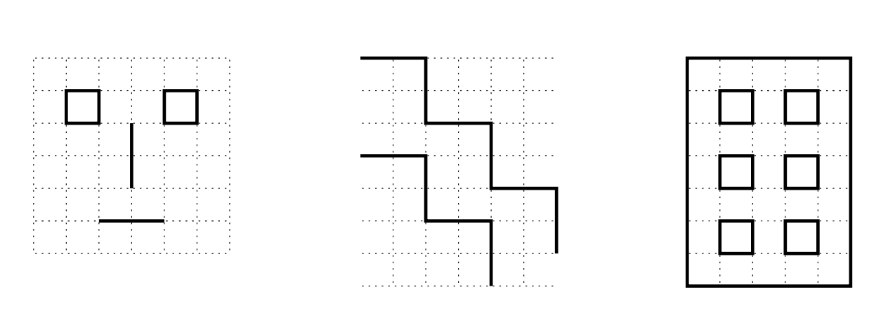

You can also use code instructions to make art!
Edit the picasso() function in the artist.js file to add your own instructions.
Below are a few operations that have been given to you. You can use them to draw lines and move around the canvas below. The position starts at the center of the canvas.
In the example below, we drew the letter 'A'. How would you draw other alphabets? Try drawing your own initials!
*You will see a black dot appear on your drawing above. This indicates where the last position you moved or drew to.
drawLineDown(length)
Draw a vertical line starting from the current position and going straight down for
the given number of cells. The current position is changed to be at the bottom end
of the line.
drawLineUp(length)
Draw a vertical line starting from the current position and going straight up for the
given number of cells. The current position is changed to be at the top end of the
line.
drawLineRight(length)
Draw a horizontal line starting from the current position and going straight to the
right for the given number of cells. The current position is changed to be at the right
end of the line.
drawLineLeft(length)
Draw a horizontal line starting from the current position and going straight to the
left for the given number of cells. The current position is changed to be at the left
end of the line.
moveRight(d)
Move the current position d cells to the right.
moveLeft(d)
Move the current position d cells to the left.
moveUp(d)
Move the current position d cells up.
moveDown(d)
Move the current position d cells down.
Try drawing these patterns below!
